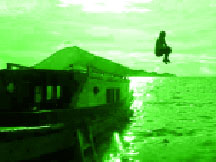

I was born in Upstate New York, the son of a Coast Guardsman and a housewife, whom I call Mom and Dad. Dad's job moved him around the country every four years, so as a kid I lived in Florida, Massachusettes, Lousiana, Washington, Florida again, Washington again... it kinda repeats from here. We adopted special needs kids while we were growing up, which made things interesting.
The twenties were kinda blurry, mostly because of my then calling as Seattle's best karaoke host. Kara, meaning empty, and oke, the abbreviation for okesutura - orchestra. Now you know. Anyway, it involved a lot of bribes, most of which came in the form of Jagermeister. Hence the blur.
Eventually I went back to the University of Washington to finish my degree. I never declared a major the first time I went, as it lasted all of a year. Fourteen years wiser, however, I decided archaeology would be a smashing good major. In many ways it was, just not in the 'let's have a productive career' way.
It did, however, take me to Indonesia, where I spent a semester digging in the remote Banda Islands, 15 hours away by boat from anything resembling a city. It was life changing in a bunch of ways. Up until that point I thought Canada was exotic. I fell in love with the people, the food, and island life in general. I knew I wasn't done with the place - or rather, it wasn't done with me.
After I got my degree, I spent a summer shovelbumming at construction sites - basically looking through the dirt the excavators dig up, making sure there're no burial grounds under the new condos. I got to say I was an honest-to-God archaeologist, and that felt good. But I still missed Indonesia, and it was only summer work.
So, I went back, as an English teacher. My interview was laughably short; they wanted to make sure I was of the caucasian persuasion and that I knew Jakarta wasn't exactly a tropical paradise. Many teachers went expecting Bali. It's not. But I loved every minute of it.
Five years later, I came back to the states with a ton of stories to tell and a beautiful wife on my arm. Managing restaurants wasn't for me, so I decided to write a book. The rest is history.
Or will be, once I get to it.